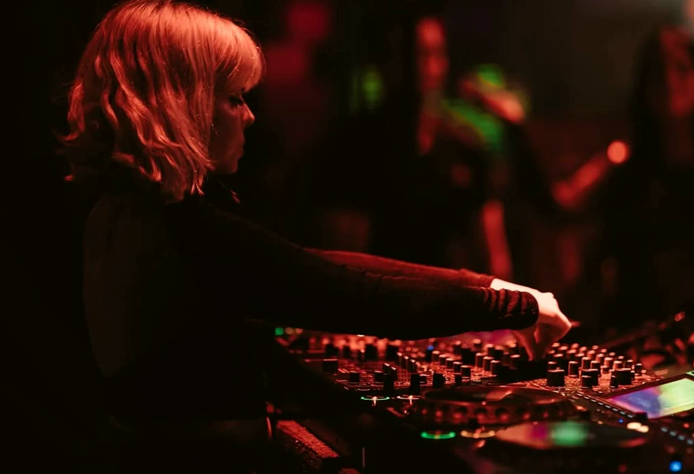
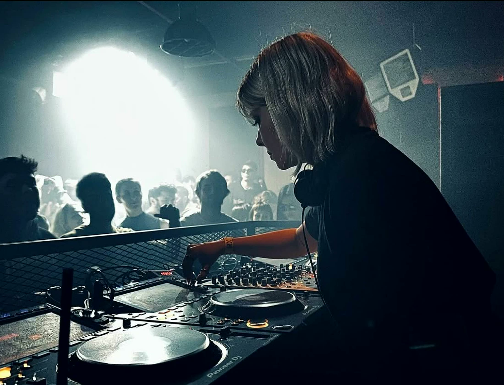

Abeille
Melis Eser. Istanbul-born, New York-based.Groovy, hypnotic techno · Left-field house · Ambient · Old-school breakbeat
About
ABEILLE is an Istanbul-born, New York-based DJ and emerging artist with five years of experience in the underground electronic music scene. Her sound moves through groovy, hypnotic techno, alongside left-field house, ambient, and old-school breakbeat.
She has played a sunset rooftop set over Brooklyn for _nevs tv, streamed for UNCURED TV and Below Grūnd, and guested on radio from Subtle and Noh to Root, Feel Groove, The Black Room and Radio Analogique.
- Groovy, hypnotic techno
- Left-field house
- Ambient
- Old-school breakbeat


Played at
- Bossa Nova Civic ClubBrooklynUpcoming: November 10
- Green Room NYCBrooklynImpulse Control, September 2026
- Below GrūndBrooklynJuly 10, 2026
- ŞahikaIstanbulBack-to-back set
- Synctika 001BrooklynFirst session
- _nevs tvBrooklyn rooftopSunset set
- UNCURED TVStreamHypnotic techno mixes
- Fader.Locals at 8x8St. Petersburg, FL
- Sector.fmRadioGuest set
- Subtle Radio · Noh Radio · Root RadioRadioGuest mixes
Listen
Contact me.
Footage: No Signal. Photographs: @ceninvoncatlien2, @erikpel and @donxulio_.